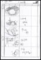
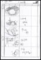
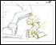
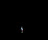

『ソニックライダーズ』オープニングアニメーションは
『攻殻機動隊』等でおなじみの「Production I.G」に制作していただきました。
ここでは「Production I.G」が『ソニックライダーズ』オープニングアニメーションを
完成させるまでの作業の流れを追って紹介します！ |
  
|
出来上がったコンテを基に
何人かの原画マンにカット毎のレイアウトを作ってもらいます。
レイアウトはカットの設計図のようなもので、
カメラアングルや背景、セル※の動きなどが
大まかな形で描かれます。
※セル＝キャラクター等動きが必要なものを指します。 |

|
このレイアウトを基にして
カットの中でのセルのポイントの動きを原画として描きます。
この際、どの原画がどのタイミングで出るか、
原画と原画の間に何枚絵が必要か、
また撮影の指示などが書かれたタイムシートという指示書が
一緒に付けられます。
また同時並行で背景を描く作業などもこの辺りから始まります。
レイアウト作業→原画作業、原画作業→動画作業の間では
監督がアングルや演技のチェックを、
また作画監督が絵の統一を行っています。 |
|
原画とタイムシートの指示を基に動画として清書をします。
原画時には動きのポイントしか描かれていなかった
間の部分も描いていきます(中割と言います)。
原画作業から動画作業の間では
タイムシート通りに動画が描かれているか、
また中割の絵が間違った動きをしていないかどうか、
動画の検査が行われます。 |
|
出来上がった動画をスキャンし、
そこに決められた色を塗っていきます。
どのキャラクターも基本の色は決まっていますが、
カット毎の状況に合わせた指定は色指定さんが行います。 |

|
出来上がったセルと背景を組合せて撮影します。
この時に火花等の特殊効果なども入れていきます。 |
出来上がったカット毎のムービーを繋げます。
この時、音楽に合わせてカットの繋がりを調整します。 |
「Production I.G」プロデューサー中武氏のコメント |
『ソニックライダース』というお仕事を今回セガさんから頂いた時にまず思ったのは、
・ ソニックというキャラクターの登場により今までに無い絵作りが出来る
・ アニメーション向きのキャラクターである
という二点の事を感じました。
作品がアニメ向きであるということにともない、
タイミング的に私が担当していた劇場作品の後ということもあり、
チ−ムの結束感を余すことなく映像に落とし込めたと感じています。
川崎 逸郎監督を中心にスタッフも生き生きと仕事が出来ました。
ム−ビ−を仕上げてからの印象は”アニメーション”ってその言葉通り、
動いているほうが楽しいなと思いました。
|
「Production I.G」に制作していただいた『ソニックライダーズ』オープニングアニメーションは
今までのソニックとは一味違った”アニメーションならでは”の、すばらしい物になりました！
これらの作業工程を見てから、
もう一度『ソニックライダーズ』オープニングアニメーションを観てみると
また違った部分が見えてくるかもしれませんね。 |
©SEGA |
|
『ソニックライダーズ』
オープニングアニメーション
監督
川崎 逸朗 氏プロフィール
・東京都出身
・フリーランス
主な監督作品：
<TVシリーズ>
『ワイルドアームズＴＶ』
『L/R』
『Canvas2〜虹色のスケッチ〜』
<劇場作品>
『ツバサ・クロニクル
鳥カゴの国の姫君』
<オリジナルビデオ作品>
『I'll/CKBC』
「Production I.G」公式サイト

『ソニックライダーズ』公式サイト |